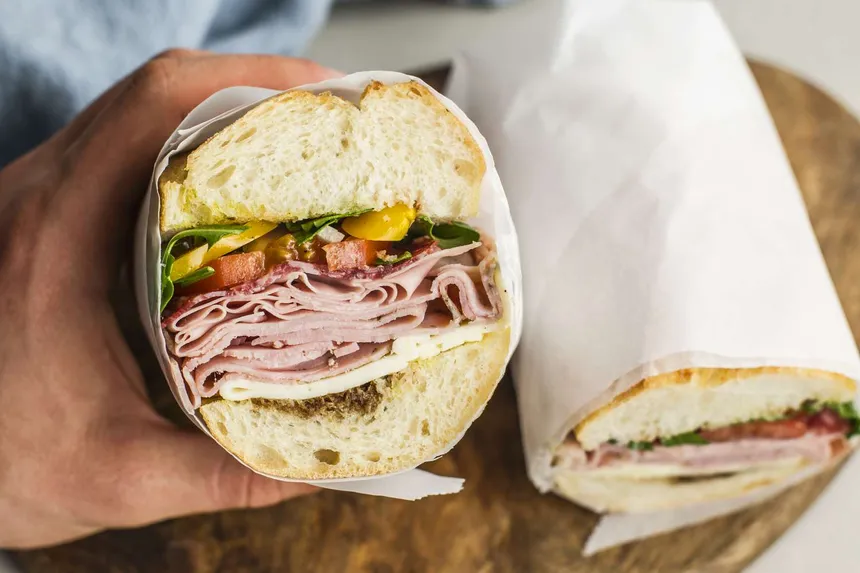

Return to homepage
Italian sub recipe

Decription:
You'll be glad you tried this recipe. Easy to make and easy to eat. This recipe will beat anythign from your favorite deli.
This recipe is an Italian sandwich sub with three kinds of meat and provolone cheese. It takes 1 hour to prepare, 20 minutes to cook, and makes 8 servings
Ingredients:
- 1 head red leaf lettuce, rised and torn
- 2 medium fresh tomatoes, chopped
- 6 tablespoons olive oil
- 1 teaspoon dried basil
- 1/4 pound prosciutto, thinly sliced
- 1/2 pound provolone cheese, thinly sliced
- 4 submarine rolls, split
- 1 cup dill pickles
Steps:
- Combine lettuce, tomatoes, and onion in a large bowl.
- Whisk together olive oil and basil in medium bowl until well combined.
- Layer prosciutto and provolone cheese on submarine rolls. Cover with pickles.
Congrats! You just made italian subs!